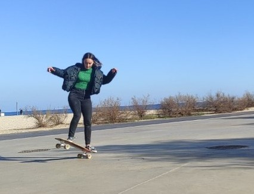
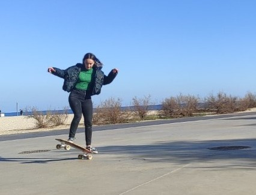

Història:
Us dono la benvinguda a tots al meu projecte, em dic Clàudia, i soc una apassionada de la natura, la cuina i la vida activa. M'encanta anar càmping, moure’m entre la platja i la muntanya, cuinar amb amor i gaudir de l’esport: surf, senderisme, córrer, pedalar... el que sigui, mentre em faci moure i em connecti amb el món que ens rodeja.
Aquest estil de vida m'ha portat a tenir una cosa molt clara: menjar bé és clau per viure bé. I això comença pel producte de qualitat, fresc i de proximitat.
Un dia, conversant amb la meva parella en una escapada, vam adonar-nos d’una contradicció que ens feia rumiar: es parla molt del consum de proximitat, però a la pràctica, les grans superfícies no ho faciliten. A més, la pagesia —aquella que realment fa créixer el que ens alimenta— està cada vegada més ofegada.
Així que vaig pensar:
- Som joves, ens agrada menjar bé, coneixem la realitat de molts productors, i volem fer alguna cosa amb sentit.
- I si connectem els dos mons?
Així va néixer DelTros una plataforma que vol acostar el producte fresc del camp a les persones, de forma directa, honesta i sostenible. Una manera de donar valor als pagesos i, alhora, alimentar millor a les llars que volen saber què mengen i d’on ve.
No volem reinventar la roda, només fer que arribi rodant fins a casa teva.
 
